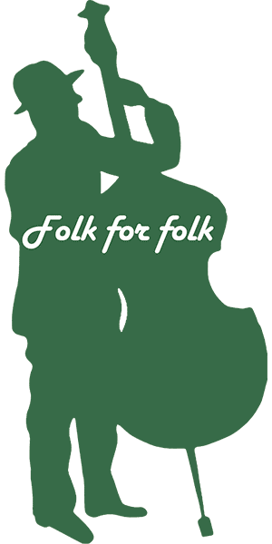
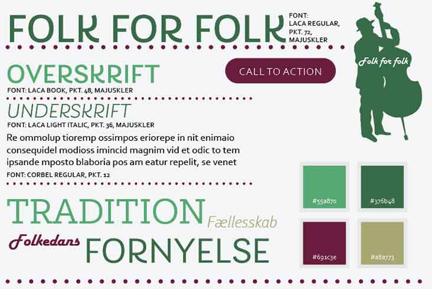
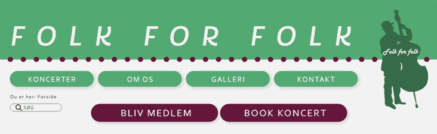

Folk for Folk
Redesign af hjemmeside
Folkemusikforeningen Folk For Folk hører hjemme i Svendborg.
En lokal forening med rødderne solidt plantet i folkemusiktraditionen, og samtidig rækker de hænderne ind i fremtidens udvikling indenfor genren.
En forening, der eksisterer et sted mellem tradition og fornyelse.
Med dette i baghovedet stod jeg i spidsen for en gruppe med formålet at redesigne deres hjemmeside og give dem en ny online identitet.
Jeg arbejdede både som projektleder og meddesigner.

Rework af originalt logo

Style tile - layout af mig
